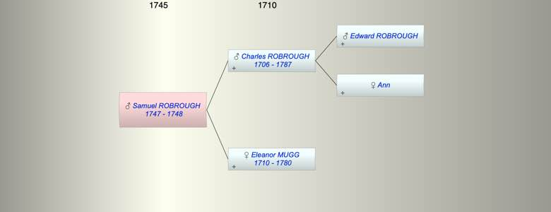

| [Index] |
| Samuel ROBROUGH (1747 - 1748) |
|  |
| b. 1747 at Southwark |
| d. 04 Feb 1748 at Southwark aged 1 |
| Parents: |
| Charles ROBROUGH (1706 - 1787) |
| Eleanor MUGG (1710 - 1780) |
| Siblings (4): |
| Anna Maria ROBROUGH (1738 - 1800) |
| Mary ROBROUGH (1740 - 1776) |
| Rebecca ROBROUGH (1743 - 1808) |
| Charles ROBROUGH (1745 - 1790) |
| Events in Samuel ROBROUGH (1747 - 1748)'s life | |||||
| Date | Age | Event | Place | Notes | Src |
| 1747 | Samuel ROBROUGH was born | Southwark | Note 1 | ||
| 04 Feb 1748 | 1 | Samuel ROBROUGH died | Southwark | Note 2 | |
| Note 1: bap 24 Jul 1747 St Saviour, Southwark son of Charles and Eleanor |
| Note 2: aged 7 months ex Southwark Cathedral MI |
| Created on a Mac™ using iFamily for Mac™ on 8 Oct 2023 |